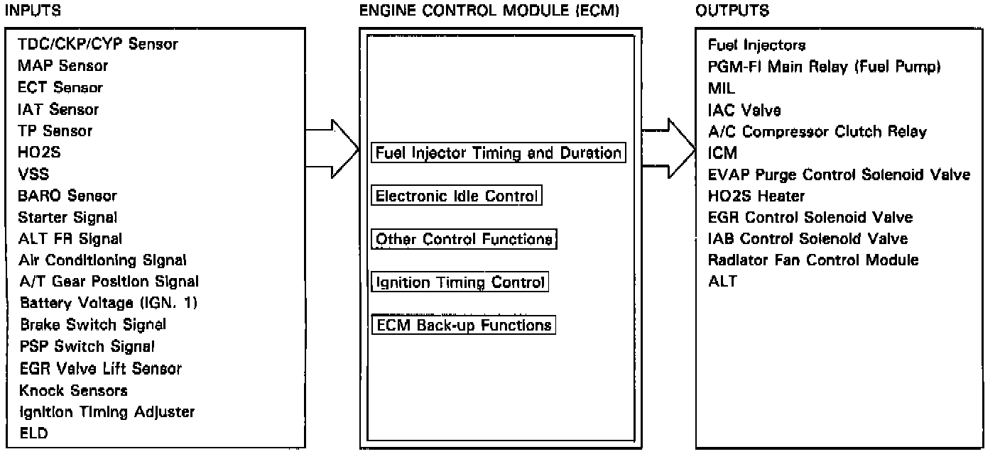

Operation CHARM
: Car repair manuals for everyone.
Home
>>
Acura
>>
1994
>>
Vigor L5-2451cc 2.5L SOHC G25A4 FI
>>
Repair and Diagnosis
>>
Powertrain Management
>>
Relays and Modules - Powertrain Management
>>
Relays and Modules - Computers and Control Systems
>>
Engine Control Module
>>
Description and Operation
Engine Control Module: Description and Operation
PURPOSE/OPERATION

The
engine control module
controls the functions of various actuators and components based on signals from related sensors and other inputs.